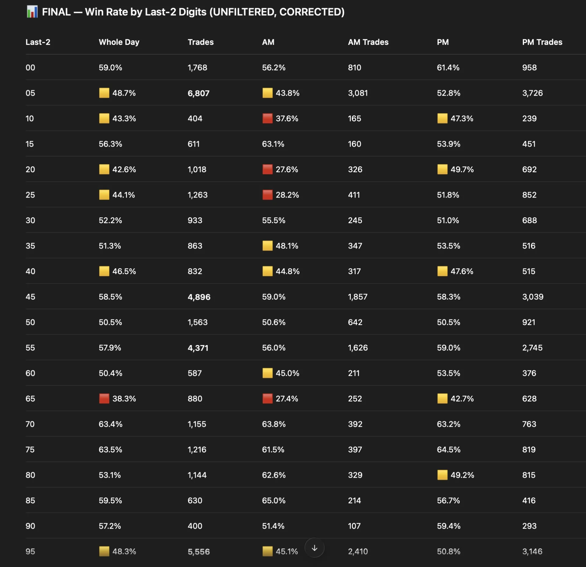
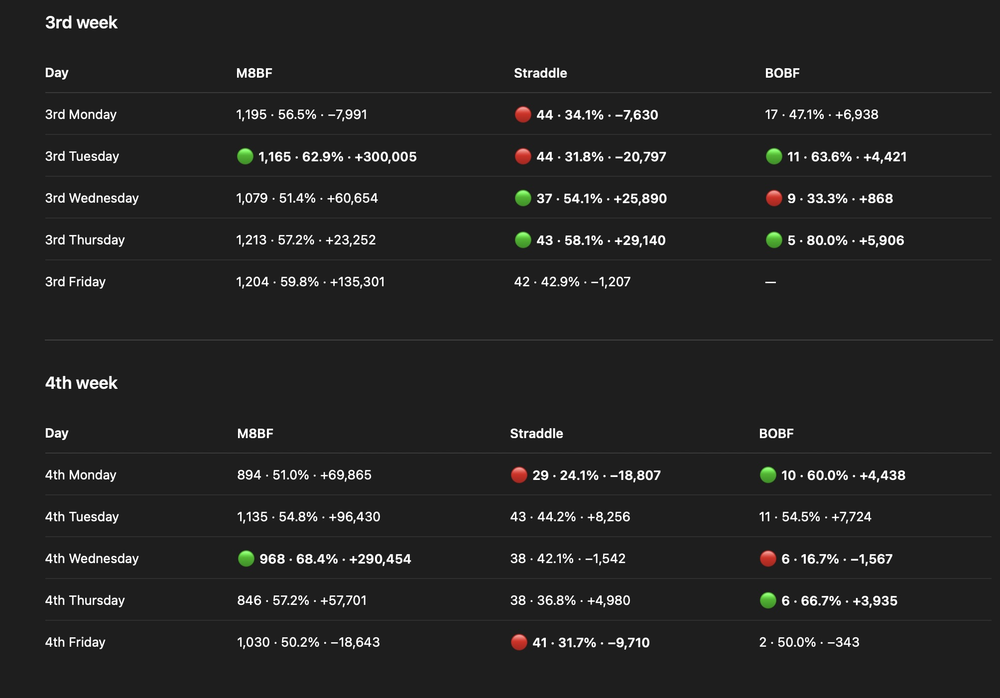
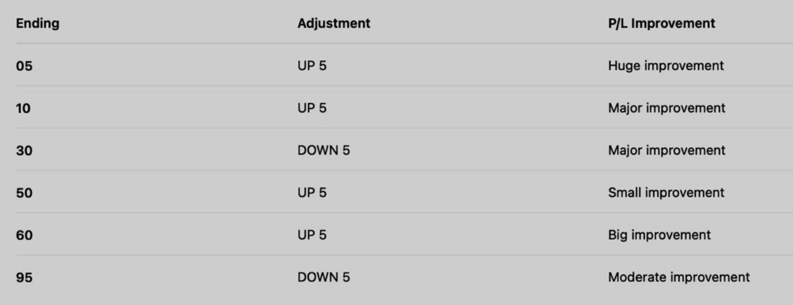

Σ3 VIX Strategy Helper
Win Rate Override
previous day
Σ VIX Calculator
Why a percentile instead of a fixed level? VIX=18 means something very different in a calm month vs. a panic month. A rolling rank adapts to whatever regime the market is in.
What the bands mean (from diagonal backtest, 800+ trades):
- 0–50% (calm edge) — VIX cheap vs recent norm. Premium sellers get paid.
- 50–80% (dead zone) — elevated but not spiky. Ambiguous regime, no edge. (Band tightened from 50-90 to 50-80 on 2026-06-09 after COR1M-aware sweep — the 80–90 tail was net-negative once COR1M ≥ 10 filter was applied.)
- 80–100% (panic edge) — VIX near recent highs. Mean-reversion + skew crush pay you.
Reading the dashboard number: green = edge present (take the trade). yellow = dead zone (consider skipping the diagonal today, especially if prior-day SPX was flat).
The Diagonal backtester has a VIX DEAD filter that combines this percentile with a prior-day-flat check — see that page for the sharpest version.
Two possible states:
- ✓ EDGE — normal trading conditions for the diagonal. At least one of the two "bad regime" conditions is false.
-
⚠ DEAD — both conditions true at the same time:
- Today's VIX ranks 50–80% of its last-20-day range (the "uncomfortable middle"), AND
- Yesterday's SPX closed within ±0.5% of the day before (a "flat / sleepy" prior session).
Why you can trust it by 9:30 AM: everything the check needs is known at the open — today's VIX open print, yesterday's SPX close, and day-before-yesterday's SPX close. Nothing depends on intraday data.
Sigma 3 — SPX 0DTE Strategy Overview
Sigma 3 consists of six SPX strategies — five 0DTE (M8 Butterfly (M8BF), Straddle, GXBF (GEX Butterfly), BOBF, PNBF (Pin Butterfly)) plus a 1-day Diagonal.
M8 Butterfly (M8BF)
- Trades every week, every day Mon–Fri inside fixed 30-minute windows: Mon 11:00–11:30 · Tue 13:30–14:00 · Wed 12:00–12:30 · Thu 11:00–11:30 (2nd trading Thu: 13:30–14:00) · Fri 13:00–13:30.
- Enter the first qualifying center strike inside the window. One trade per day. Skip if none appears.
- Banned center strikes (FULL): centers ending in 10, 25, 35, 40, 65, 80 — banned regardless of Target 1. Combo bans (keyed by T1 % 100 → banned center ending): T1 ends :00 → center :95 · T1 ends :20 → center :15 · T1 ends :55 → center :50 · T1 ends :65 → center :60 · T1 ends :85 → center :90.
- Not traded on: EOM · EOM-1 · day before OPEX · VIX exp day (when VIX exp falls after OPEX) · all earnings days except AMZN and TSLA · NVDA earnings days. On EOM/EOM-1/day before OPEX/VIX exp day, M8BF is only allowed if previous day WR ≥ 90%. Use discretion on: first trading day of month · Fed decision day.
- Anchor Filter: not traded when the previous session's 10:30 ET dealer-anchor reading ranks in the bottom 17% of the trailing 120 days. An unanchored day is one where hedging flows amplify moves instead of holding price at levels — the conditions butterflies need are absent. The GO / SKIP verdict is set the evening before, so it is known before the market opens.
- Fat-gamma tier (informational): when the same prev-session reading ranks in the upper tier (p60–90), the card and signal carry a 🟢 note — historically M8BF's strongest regime (72% win rate vs 66% on other traded days; the 90+ extreme is excluded as it has not been stronger). This is context only — the signal itself never changes.
- 2nd trading Thursday override: window shifts to 13:30–14:00 (instead of 11:00–11:30). All other rules (banned strikes, skip dates) remain the same.
- No stop-loss — hold to expiration.
Straddle
- Range: fires when overnight VIX drop is strictly between 0 and 0.65 (yesterday's VIX close − today's VIX open). Self-contained range; no reference to other strategies.
- Entry: 9:32 AM.
- Auto-fire overrides (force Straddle regardless of range):
- EOM (last trading day of month) → EOM Straddle @ 9:32 AM. Max risk: $3,500.
- NM non-Monday (first trading day of new month, not Monday) → NM Straddle @ 9:32 AM. Max risk: $3,200.
- Win rate = 0% prior day → forces Straddle. WR rule treats Fed day like any other day.
- Blocks:
- CPI day (hard-block — all Sigma 3 strategies).
- OPEX day (monthly options expiration Friday).
- Regular Wednesday — no Straddle on a plain Wednesday. Fed day, EOM & NM still straddle; a 0% prior-day WR still force-fires it.
- Friday — no Straddle, no exceptions (rule 2026-08-14): all Friday subtypes blocked (regular, EOM, NM, Fed) and the 0% WR override does not fire through it. Basis: 2026 Fridays went 0-for-9 (−$12.8k) across every subtype while non-Friday 2026 straddles made +$23k; gamma filters tested with no separation.
- SPX gap ≥ 0.9% at open (up or down).
- Open-to-open VIX drop > 1.4 (yesterday's VIX open − today's VIX open).
- Win rate ≥ 90% prior day → forces M8BF (Straddle suppressed).

GXBF (GEX Butterfly) — 0DTE long-call gamma butterfly
- The idea. Every morning a gamma model computes the SPX call strike with the most positive dealer-positioning gamma — loosely, the level that dealer hedging tends to pull the market toward and "pin" into the close. GXBF builds an inexpensive long-call butterfly centered there, so it profits when SPX settles near that strike.
- When it trades (trigger). Either condition fires the day:
- Overnight VIX drop > 0.65 pts (yesterday's VIX close minus today's VIX open), or
- It's OPEX+1 — the trading day right after monthly options expiration. That day has historically pinned well, so GXBF is automatic regardless of the overnight VIX move.
- When it stays out (block). Even if the trigger fires, the trade is blocked when any of these apply:
- VIX ≥ 25 today (too wild to pin reliably — hard volatility cap).
- It's OPEX+1 and VIX gapped up ≥ 2% overnight (the auto-trigger is suppressed when post-expiration vol jumps).
- It's EOM (the last trading day of the month — handed to the Straddle).
- What's no longer a block. OPEX-1, NM-non-Monday and CPI days used to be banned. Under the current rules they're allowed — they fire on their own merits when the trigger/block test passes (CPI still hard-blocks M8BF/Straddle/BOBF, but GXBF is exempt). Fed-decision days remain fine. GXBF is strategy-independent: it never blocks the other Sigma 3 strategies and is never blocked by them.
- 9:35 gamma gate → GATED STRADDLE (since 2026-07-30). At signal time the fresh 0DTE total dealer-gamma book must be positive for the fly to fire — negative books historically ran −$369/day at 59% WR vs +$999/day at 70% on positive books (73 traded days). A negative reading doesn't waste the day: GXBF stands down and the day converts to a GATED STRADDLE — a straddle at the SPX open strike (nearest 5), limit ≤ $32, working until 1:30 PM (canceled if unfilled), held to cash settlement with no TP/SL. Basis: the 12 historical gated days paid +$11,711 on 5-of-7 fills, positive even excluding the two crash days and positive in 2026. The gate fails open — a missing or stale gamma reading never cancels a valid GXBF. The gate applies on OPEX+1 too: the auto-trigger never overrides it (owner rule 2026-07-31). The conversion itself requires overnight VIX down — always true on trigger days by definition; a VIX-up gated morning (possible only on OPEX+1) takes no trade at all and falls back to regular logic.
- How the center is chosen. At ~9:35 AM ET the gamma model computes the center from the live 0DTE SPX call chain (Black-Scholes γ within ±5% of spot, snapped to the nearest 5), weighted by traded volume — today's actual flow. History: a hybrid rule used to route OPEX-1 / VIX-expiry / FOMC days to the open-interest-weighted center; it was retired 2026-06-10 after failing out-of-sample validation (always-volume beat hybrid +$33.2k vs +$24.4k on the held-out half and tied in-sample). The OI center is still computed and shown for reference, and the radio buttons on
gxbf-backtester.htmllet you force OI or hybrid for what-if studies. - How the trade is built. Buy one lower call (center − wing), sell two center calls, buy one upper call (center + wing) for a net debit. The wing widens as far as possible while keeping one hard rule: max risk ≤ max reward (net debit ≤ half the wing). It picks the widest width that still satisfies that — worst-case loss is capped near $5,000 per contract via the
W ≤ 100cap. If no width qualifies that day, no trade. - Timing & exit. Enter ~9:35 AM ET (once the morning gamma level is out) and hold all the way to the 4:00 PM SPX cash close — no stop, no early exit. P&L is the exact butterfly intrinsic at the close minus the entry debit.
BOBF
OTM call butterfly on SPX 0DTE, entered between 10:29 AM and 12:15 PM ET. Structure: short 2× call body, long 1× call body−30, long 1× call body+30 (wings are symmetric at ±30 — body is what sits OTM, not the wings). Three variants run side-by-side — exactly one fires per day based on the calendar and overnight VIX.
Shared rules (all 3 variants):
- Entry window 10:29 AM – 12:15 PM ET. One position, one contract per day.
- SPX must be above the 5-day SMA (prior daily closes).
- VIX ≤ 23 — blocked above.
- Not traded on: CPI days · monthly VIX expiration · OPEX · OPEX-1 · EOM-2 · EOM-1 · NM Monday · all 7 earnings days (MSFT, META, GOOGL, AMZN, AAPL, NVDA, TSLA).
1. Friday RSI BOBF — Fridays only (OptionOmega)
- Body offset ±15, wings body±30.
- RSI(14) ∈ [40, 65] on prior daily closes — outside the band, no trade.
- Move-up from open ≥ 0.10%.
- Max premium $12 — working limit cancels at 12:15 ET if mid never drops to ≤ $12.
2. BOBF VIX up — Mon–Thu, overnight VIX rose (OptionOmega)
- Body offset ±25, wings body±30.
- Overnight VIX move ≥ +0.01 pts (VIX today open > VIX yesterday close).
- No RSI filter — fires regardless of momentum band.
- Move-up from open ≥ 0.20% (no upper cap).
- Fills at first qualifying minute — no premium ceiling.
3. BOBF VIX down — Mon–Thu, overnight VIX fell
- Body offset ±25, wings body±30.
- Overnight VIX move ≤ −0.01 pts (VIX today open < VIX yesterday close).
- RSI(14) ≤ 70 — blocked above 70.
- Move-up from open in [0.20%, 0.70%] — too flat or too hot both block.
- Fills at first qualifying minute — no premium ceiling.
Flat-overnight Mon–Thu (|ΔVIX| < 0.01) qualifies for neither vix_up nor vix_down → no BOBF that day.

NM & EOM Straddles
- NM Straddle — first trading day of month, except Mondays. Max risk: $3,200.
- EOM Straddle — last trading day of month. Max risk: $3,500.
- Both use standard 9:32 AM Straddle entry.
- EOM blocks GXBF — the last trading day of the month is in GXBF's block list, so a GXBF trigger on EOM is suppressed and the day goes to the EOM Straddle.
- NM does not block GXBF — under the current rules NM-non-Monday is allowed for GXBF; the two strategies are independent and can both fire the same day if their own conditions are met.
- NM Monday follows the regular VIX calculator (no NM Straddle override).
Win Rate Rules (Strongest Overrides)
- WR = 0% prior day → forces Straddle. Trumps M8BF, GXBF, SPX gap block, o2o block. WR rule treats Fed day the same as any other day — only CPI day overrides (CPI hard-blocks every strategy).
- WR ≥ 90% prior day → forces M8BF. Trumps Straddle, NM Straddle, SPX gap block, o2o block, M8BF EOM-style bans. Does NOT cancel GXBF — GXBF is independent.
- These are the strongest signals in the system. Gap and o2o rules only apply when neither WR=0% nor WR≥90% is active.
VIX Expiration Rule
- If VIX expiration falls after OPEX in the same month → M8BF blocked on VIX expiration day itself.
- If VIX expiration falls on or before OPEX → this rule does not apply.
1/25 Put Diagonal — Companion Strategy (separate from Sigma 3; OPEX-1 + EOM + EOM-1 + NM + VIX 50–80% + COR1M<10 filtered default, 10 ITM / 20 below — safer-tail config)
A SPX put-diagonal spread that runs alongside the Sigma 3 bundle. Different instrument, different DTE, and different trade windows — so it's largely uncorrelated with M8BF / Straddle / GXBF / BOBF and stacks cleanly on top of them. Backtested 2023-01 → 2026-04 on real NBBO quotes (SPX chain via Polygon, SPX / VIX closes via Schwab).
Strategy author: Mads. Full interactive backtester: diagonal.html.
Structure (default — updated 2026-06-09 safer-tail config)
- Short leg — sell a 1 DTE SPX put at a strike +10 pts above spot (shallow ITM — collects modest extrinsic plus small intrinsic, fast theta burn into expiry). Strike tolerance ±5 pts.
- Long leg — buy a 25 DTE SPX put at a strike −20 pts below the short (roughly 10 pts OTM from spot, width 20). Strike tolerance ±5 pts. Expiration tolerance ±5 DTE.
- Bullish-skewed net — deltas partially offset, but the shallow-ITM short put still dominates so the structure is mildly long delta. Profit comes from the short leg decaying faster than the long leg (different DTE = different theta rates), not from direction.
- Sizing — 10 ITM / 20 wide (long 10 OTM) — theoretical max loss ≈ debit + width = debit + $2,000/contract. With typical $4,624 avg debit, planning number is ~$6.6K/contract on a normal-day catastrophe, up to ~$14.5K on a worst-entry-day tail event. Empirical worst trade in the 2023-2026 backtest at this setup is −$3,510 per contract (vs −$4,375 on the old 30/40 setup).
- Example — SPX 6300 → sell the 1 DTE 6310 put (10 ITM), buy the ~25 DTE 6290 put (10 OTM).
Timing
- Entry —
12:30 ETevery eligible trading day. - Exit — next trading day at
12:30 ET(exact 24-hour hold). Yesterday's position is closed at the same moment today's is opened — so only one diagonal is live in the book at any given instant. No overlap, no stacked gamma, no "two diagonals on top of each other". - Recommended entry/exit window — any clock time between
12:30 ETand15:00 ETworks, as long as entry time equals exit time. Earlier than 12:30 picks up too much of the morning open's noise; later than 15:00 leaves too little room on the expiring-short side. - Backtest simplification — the public backtester opens a brand-new position at entry time each day and closes it 24 hours later at the same clock time on the next trading day. No rolling fees, no mid-trade adjustments. Live execution with continuous rolls can differ.
Default Filter Stack (all five excluded — updated 2026-04-29)
- OPEX-1 — skip the trading day immediately before monthly OPEX. Historically the weakest-edge day of the OPEX cycle.
- EOM — skip the last trading day of the month. Month-end rebalancing flow creates noisy reprice that hurts deeper-ITM short structures.
- EOM-1 — skip the second-to-last trading day too. Rebalancing pressure starts the day before EOM and leaks into pricing.
- NM — skip the first trading day of the month. NM overlaps the Straddle/auto-flow day and the overnight gap risk dominates theta burn.
- VIX 50-80% (dead zone) — skip days where today's VIX 20-day rolling percentile lands in the 50–80% band
(the "uncomfortable middle" — elevated but not spiky). Historically the strategy has no edge there;
trade normally in 0–50% (calm → cheap vol sellers get paid) or 80–100% (panic → mean-reversion + skew crush pay).
Percentile is ready by 9:30 AM ET (uses today's first VIX print at-or-after 9:30 vs the prior 20 days' closes — canonical per
signal-engine.js::computeVixPct20d; same value the live signal banner reads). Re-optimized 2026-06-02 from 40–90 to 50–90 (+$12.4k on corrected VIX data), then tightened 2026-06-09 to the current 50–80 — the 80–90 tail was net-negative once the COR1M ≥ 10 filter applied. - Earnings filters dropped (2026-04-29) — at the new 30/40 strikes, the per-ticker earnings gates (AAPL/MSFT/TSLA/META) were costing more edge than they preserved. The deeper-ITM short collects enough extrinsic that a single mega-cap report doesn't break it. EOM/EOM-1 added in their place because month-end flow hurts deeper structures more.
- This filter stack is the default version of the strategy on this site — the one plotted on the historical backtester and the one counted in the default-diagonal equity line. All references to "diagonal P/L" in the UI use this filtered version unless noted otherwise.
What it is not
- Not 0DTE — both legs carry overnight (1 DTE short + 25 DTE long).
- Not a credit spread — it's a long-calendar-style diagonal; different DTEs, different strikes.
- Not part of Sigma 3 — separate sizing and separate signals. It does not displace M8BF / Straddle / GXBF / BOBF.
- Not blocked by CPI, FED, or earnings — the default filter stack only skips OPEX-1, EOM, EOM-1, NM, and VIX 50-80%. Per-ticker earnings filters were dropped 2026-04-29 because at 30/40 strikes they cost more edge than they preserved.
- Never two diagonals at once — because entry time equals exit time, the previous day's position exits at the exact instant the next one opens. One position in the book, always.
PNBF (Pin Butterfly) (now part of Sigma 3, added 2026-07-15 — traded at 10 contracts; live record on magnetfly.html)
- Now part of Sigma 3. Traded at 10 contracts by default, with signals delivered through the Sigma channel + DMs like the other strategies. Two heads-up alerts fire first — a 9:40 ET "possible / not" read and an 11:30 ET heads-up — then the 12:00 ET final call.
- Signal: at the 12:00 ET final call, the M8BF service's fly center sits exactly 5 pts from the day's gamma magnet (max positive OI-basis GEX strike, 10:30 snapshot) — i.e. its Target 1 IS the magnet. Fires ~35% of days.
- Skip days: EOM (last 2 trading days) · CPI · FED · Mon–Thu of monthly OPEX week (OPEX Friday itself is traded).
- Trade: 30-wide SPXW 0DTE call fly at the magnet, only if debit ≤ $17.00 (typ ~$12.30). OCO bracket: TP +3.0 (+$300/lot) / SL −5.0 (−$500/lot), else settle.
- Backtest (Sep 2024 → Jun 2026, real NBBO + slippage): 87 trades · 83.9% WR · +$171/lot avg · t=5.40 · PF 3.13 · maxDD $1,000 · ~4/mo. Strategy-independent — never blocks or displaces M8BF / Straddle / GXBF / BOBF.
Last 2 digits win rate — AM vs PM. Avoid low win rate strikes.

Raw Stats




All trades held to expiration.
Disclaimer: For informational and educational purposes only. Not financial advice. Trading options involves significant risk.
Recent Changes
- GXBF hybrid gating + per-day OI/Vol center routing (2026-05) — gating simplified to a clean Trigger/Block rule. Trigger: overnight VIX drop > 0.65 pts OR OPEX+1 auto-trigger. Block: VIX ≥ 25 OR (OPEX+1 AND VIX gap-up ≥ 2%) OR EOM. OPEX-1, CPI, and NM-non-Monday are no longer banned — they fire if the trigger/block check passes. Center routing is now hybrid: OPEX-1 / VIX-expiry / FED days use the OI-weighted center (γ × open interest); all other days use the volume-weighted center (γ × volume). Both centers are computed in-house from the live 0DTE call chain via Black-Scholes γ (R=0.043, Q=0.013, ±5% of spot, snap to 5) — replacing the deleted Discord scraper.
history_data.json'sgxbfPLvalues were rebuilt under the new rules. - 1/25 Put Diagonal — VIX dead-zone re-optimized (2026-06-02) — band moved from (40, 90] to (50, 90] after the May ThetaData VIX audit corrected 56 historical VIX prints. Re-running the sweep with the now-accurate VIX data found the pct=41–50% band is actually profitable (24 marginal trades = +$12,405 historically). Net effect on history: +$12.4k P/L, lower MaxDD ($7,515→$6,945), higher MAR (12.16→14.94). Strikes (30 ITM / 40 below), times (12:30/12:30), filter stack (OPEX-1 + EOM + EOM-1 + NM) all unchanged from the 2026-04-29 spec. Superseded 2026-06-09: band tightened to the current (50, 80] — the 80–90 tail proved net-negative under the COR1M ≥ 10 filter.
- 1/25 Put Diagonal — entry/exit window finalized (2026-04-23) — moved to 12:30–15:00 ET window (24-hour hold, Entry Time === Exit Time, no two diagonals active at once). Long leg shortened to 25 DTE (from 30). Recommended any clock time between 12:30 and 15:00, as long as Entry Time === Exit Time.
- GXBF on OPEX+1 blocked when VIX gaps up ≥ 2% overnight — if today's VIX open is ≥ 2% above yesterday's VIX close, the automatic OPEX+1 GXBF signal is suppressed entirely.
- SPX gap ≥ 0.9% cancels Straddle only — when the absolute SPX gap (today's open vs yesterday's close) is ≥ 0.9%, any Straddle or NM Straddle signal is cancelled. No effect on M8BF or GXBF. Gap and o2o have zero connection to butterfly.
- o2o > 1.4 cancels Straddle only (except EOM) — when the open-to-open VIX drop exceeds 1.4, any Straddle or NM Straddle signal is cancelled. Does not apply on EOM days. No effect on M8BF or GXBF.
- m8bfBanned days — M8BF is blocked on EOM, EOM-1, day before OPEX, and VIX exp day (when VIX exp falls after OPEX). Only a previous day WR ≥ 90% can override this ban.
- WR=0% / WR≥90% now trump gap and o2o — these are the strongest overrides in the system. If previous day WR=0%, Straddle is forced even if SPX gap or o2o would have blocked it. If WR≥90%, M8BF is forced regardless. WR rules treat Fed day the same as any other day; only CPI overrides (CPI hard-blocks all strategies).
- VIX close corrected to 4:15 PM — all historical VIX/SPX close values now use 4:15 PM Schwab data instead of 3:59 PM ThetaData.